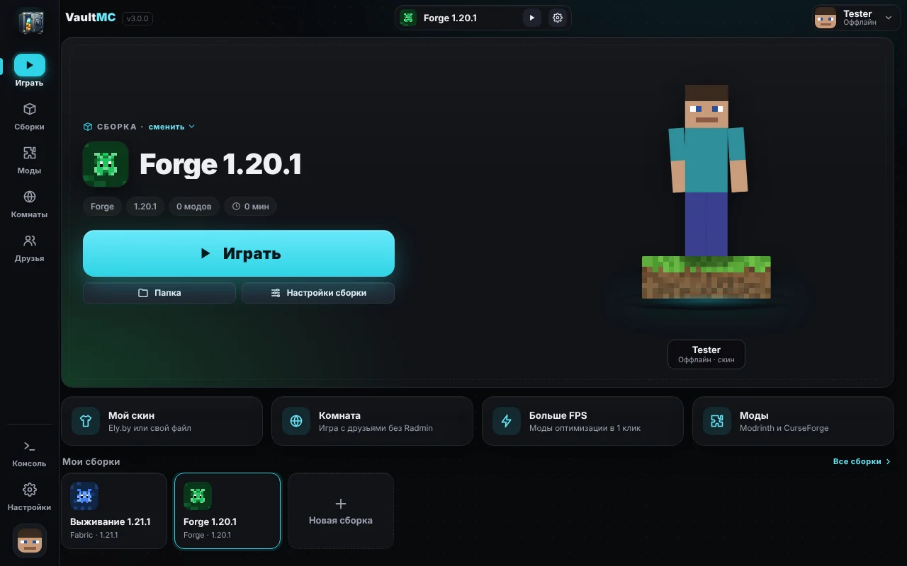
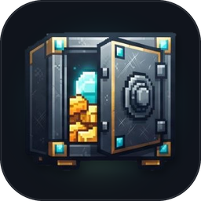

Обычный установщик, как у любой программы. Всё нужное уже внутри: ничего не нужно ставить заранее. Java для игры лаунчер скачает сам.
Открой «Загрузки» и два раза нажми на VaultMC-Setup.exe.
Нажми «Далее» → проверь галочку «Ярлык на рабочем столе» → «Установить» → «Готово».

Это нормально для новых программ: у VaultMC пока нет платной цифровой подписи, и файл ещё редко скачивали. Вирусов в нём нет — предупреждение пропадёт само, когда лаунчер станет популярнее.
Установщик загрузили на VirusTotal: ни один из 70 антивирусов и сервисов безопасности не отметил файл как вредоносный. Лаунчер бесплатный, всё нужное уже внутри, ничего лишнего не ставится.
812ca7d85f3e42350ba6b2f95a269ed687475809098e1233347789ec1e981b51Установщик обновился после этой проверки, ссылка выше ведёт на отчёт по предыдущей сборке. Проверь свежий файл так же, как описано ниже: хэш должен совпасть с тем, что покажет команда.
Всё, что обычно ставят отдельными программами, собрано в одном окне.
Оффлайн-ник с паролем или Ely.by со скинами. Можно держать несколько и переключаться в один клик.
У каждой своя папка: моды, миры и настройки не смешиваются. Экспорт и импорт в форматах Modrinth (.mrpack) и CurseForge (.zip).
Моды, ресурспаки, шейдеры и готовые сборки — обе площадки работают сразу, без ключей и настроек. Отметь галочками и скачай пачкой.
Sodium, Lithium, FerriteCore и ещё 3 мода одной кнопкой, пресеты графики, приоритет игры и мощная видеокарта.
Открой мир друзьям через интернет — без Radmin, Hamachi и проброса портов. Друг из списка заходит напрямую, а если провайдер не пускает — через e4mc.
Видно, кто в сети и во что играет. Открыл друг мир — жми «Зайти»: лаунчер подберёт сборку и подключит.
Релизы, снапшоты, бета и альфа — с фильтрами и поиском. Vanilla, Fabric, Forge и NeoForge.
Игра упала — лаунчер по-русски объяснит почему: не хватает мода, мало памяти, не та Java — и починит в один клик.
Резервные копии миров и перенос между сборками, список серверов с онлайном и пингом, галерея скриншотов.
Лаунчер находит новые версии модов на Modrinth и CurseForge и обновляет их одной кнопкой.
Своя картинка на главном экране, цвет интерфейса и английский язык.
Рисуй скин по пикселям, плащи, аксессуары и 24 своих образа. 3D-просмотр: крути персонажа мышью. Скин видят все, кто играет вместе через VaultMC с модами.
Поделись сборкой кодом из 6 символов — друг получит ту же версию, загрузчик, моды и настройки.
Не тот загрузчик или версия, мод лежит дважды, не хватает зависимости — лаунчер покажет и исправит до того, как игра упадёт.
Лаунчер смотрит память, процессор и видеокарту и подбирает память для игры, графику и моды оптимизации.
Файлы игры и моды качаются параллельно, с запасными ссылками и проверкой контрольных сумм. Скорость видна в прогрессе.
Главный экран VaultMC: сборка крупно, большая кнопка «Играть», твой персонаж на подставке и полка сборок.
Лаунчер ставит в твою сборку моды e4mc и LAN World Plug-n-Play (Fabric, Forge или NeoForge). Мир получает публичный адрес, и друзья заходят по нему из любой точки мира. Друзья из списка VaultMC подключаются ещё и напрямую — без сервера-посредника; если провайдер этого не позволяет, лаунчер сам зайдёт через e4mc. Лицензия не нужна никому — достаточно выключить онлайн-режим.
Лаунчер ставит мод и запускает игру.
Выключи онлайн-режим и нажми «Открыть». Появится адрес вроде brave-fox.eu.e4mc.link. Лаунчер скопирует его сам.
Вставляет адрес, игра запускается и сразу подключается.
Нет. Оффлайн-аккаунты и Ely.by работают без неё: игра, моды, сборки и комнаты.
Бесплатно. Весь код лежит в архиве открыто, его можно прочитать и поменять.
Да, если вы оба играете через VaultMC в сборке с Fabric, Forge или NeoForge: лаунчер сам ставит мод CustomSkinLoader и берёт скины с сервера VaultMC. В сборке без модов чужие скины игра не показывает.
У части провайдеров (чаще всего мобильный интернет) строгий NAT — прямое соединение между двумя компьютерами не получается. Тогда лаунчер сам заходит через туннель e4mc, ничего настраивать не нужно.
Нет. Лаунчер сам скачает ту версию Java, которая нужна выбранной версии игры, — как официальный лаунчер.
В папку %USERPROFILE%\.vaultmc. Каждая сборка лежит в своей подпапке, и при переустановке лаунчера ничего не пропадёт.
Открой папку %LOCALAPPDATA%\Programs\VaultMC\app и запусти debug.bat: он покажет ошибку. Журнал запуска лежит в .vaultmc\launcher.log.
Параметры Windows → «Приложения» → VaultMC → «Удалить». Миры и сборки останутся в папке .vaultmc — удаляй её, только если они точно не нужны.